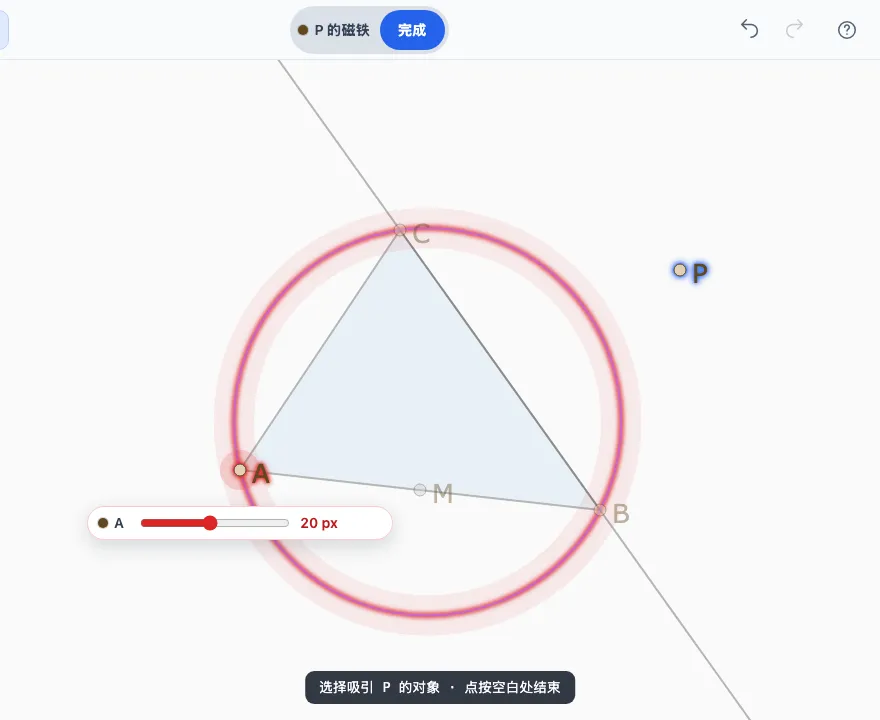

磁铁、图钉和弹簧
磁铁
带磁性的自由点被拖到所选对象附近时会吸附在上面，但并不与它们绑定。

- 选中自由点，然后点 磁铁。图形的其余部分被蒙上一层遮罩。
- 点按每个起吸引作用的对象（点、直线、圆、圆锥曲线、曲线、列表）：它变为红色，初始吸引范围为 20 px。该点本身及其依赖对象不能选择。
- 用所选磁铁卡片上的滑动条调整吸引范围：无（移除该磁铁）、1 到 1000 px、任意位置。每个磁铁的吸引区域以浅红色显示。
- 点按空白处、完成或 Esc 结束。
调整时可以拖动该点进行试验。每次调整都是一个撤销步骤。
图钉
固定在屏幕上（自由点，平面图形）：缩放或平移视图时，该点保持在窗口中的位置，而不是保持其坐标。它仍可移动。再按一次：取消固定。
弹簧
动画（直线、线段、射线、圆、圆弧、多边形、圆锥曲线或轨迹上的点）会在点下方伸出一根末端带球的弹簧。
- 拉动小球再松开即可让点运动；拉动时，点的虚影已显示运动情况。
- 长度：速度，按显示的档位（直线、多边形或圆锥曲线上为 px/s；圆上为 °/s；轨迹上为 %）。
- 方向：点朝拉动的反方向运动。
- 相对于直线横向拉（超过 45°）：往返运动。否则点循环运动。
- 低于第一档：停止。
对已在运动的点，弹簧伸出时已按当前速度拉紧。再按一次：收起弹簧。精确速度、反向、到达端点时停止：见属性中的动画部分，它也可以让滑动条运动。